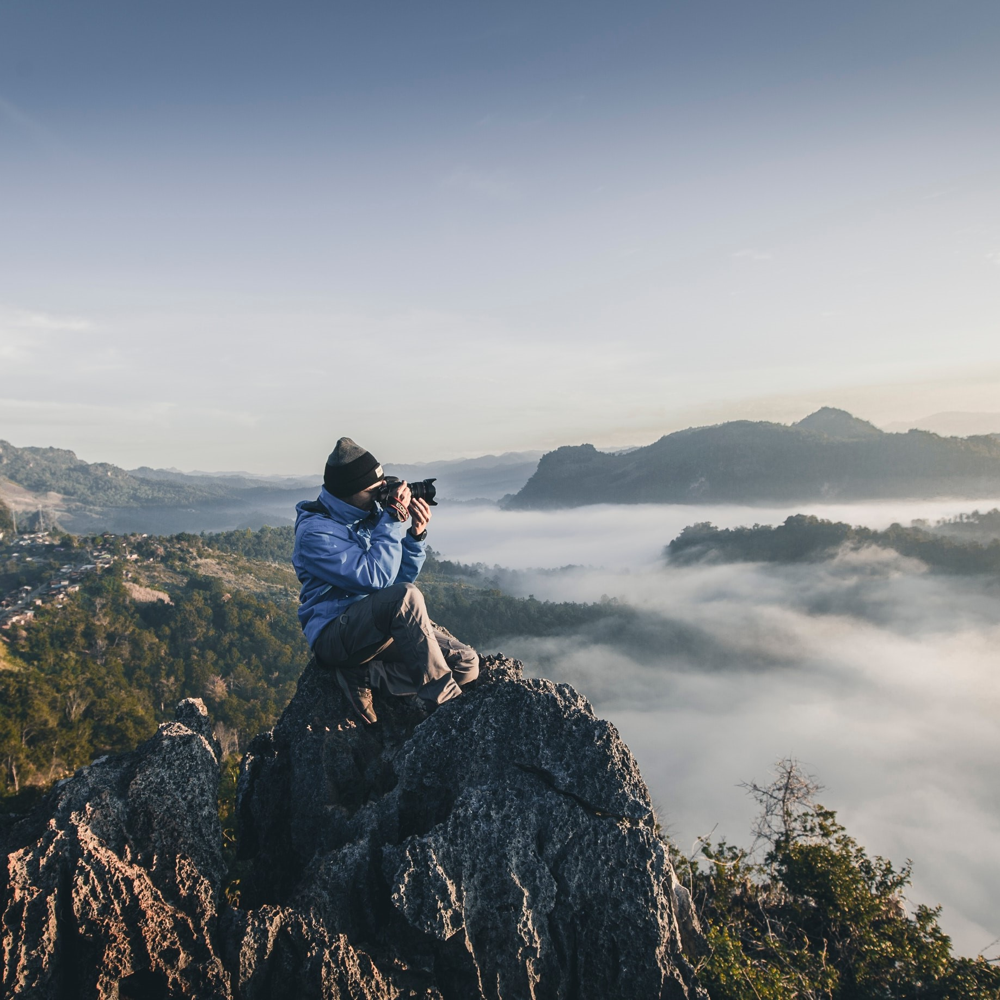
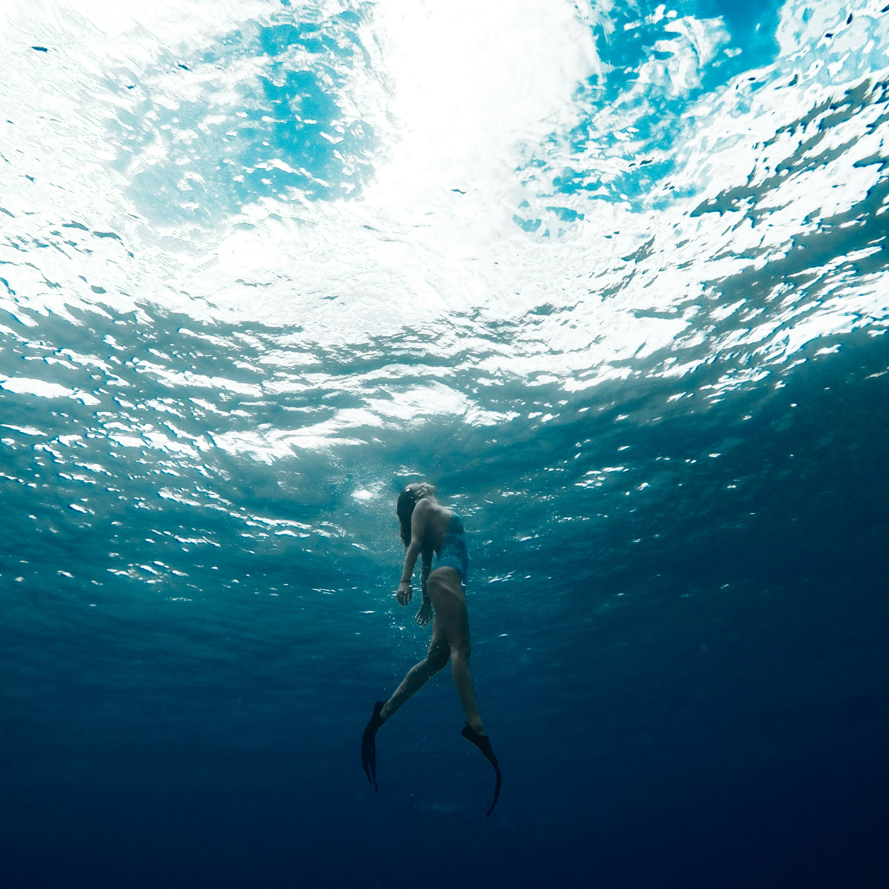

Photography
It is an activity that 'draws with a light', which derives from the Greek photo, meaning light and graph, meaning to draw. Photography is the process of recording an image a photograph on light sensitive film or, in the case of digital photography, via a digital electronic or magnetic memory.

Picnic
Manic Pro will be a perfect place for picnic. Its an activity that has a social gathering where each attendee brings a share of the food. The French piquer may have referred to a leisurely style of eating ("pick at your food") or it may, simply, have meant, "pick" (pic). This could be done with your family or friends.

Swimming
It is a recreation and sports, the propulsion of the body through water by combined arm and leg motions and the natural flotation of the body. Swimming as an exercise is popular as an all-around body developer and is particularly useful in therapy and as exercise for physically handicapped persons.